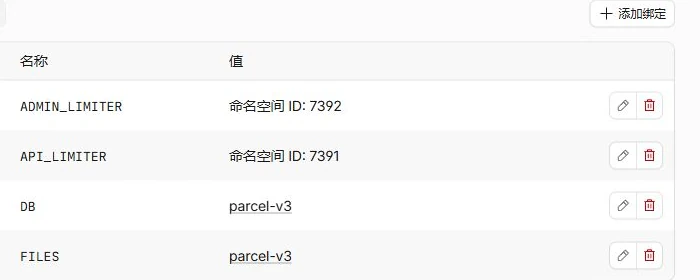
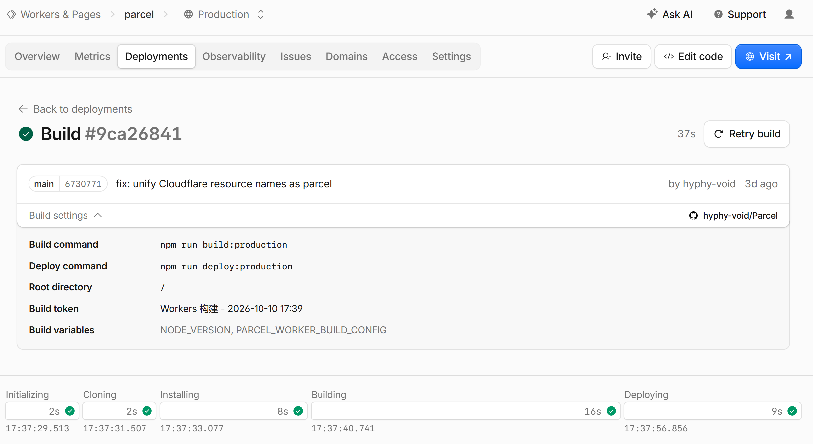
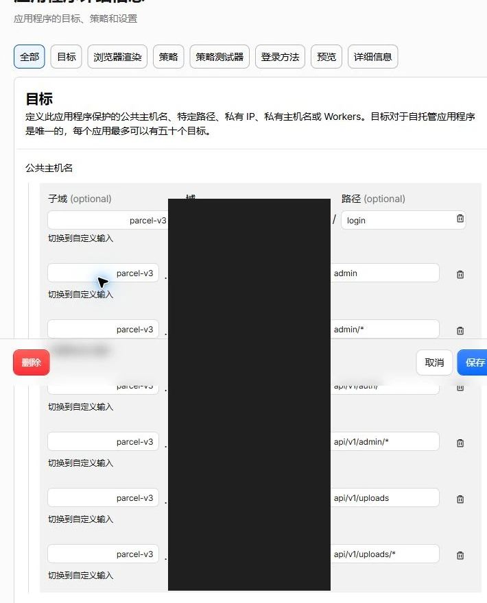
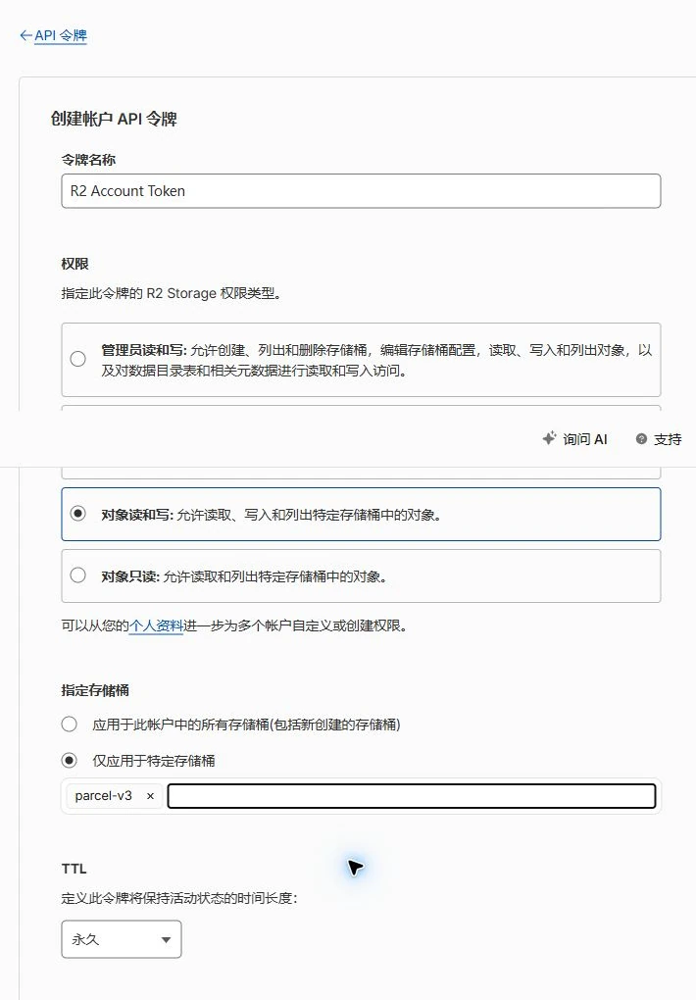
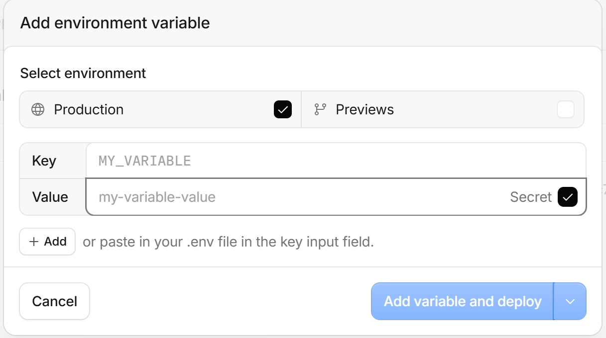
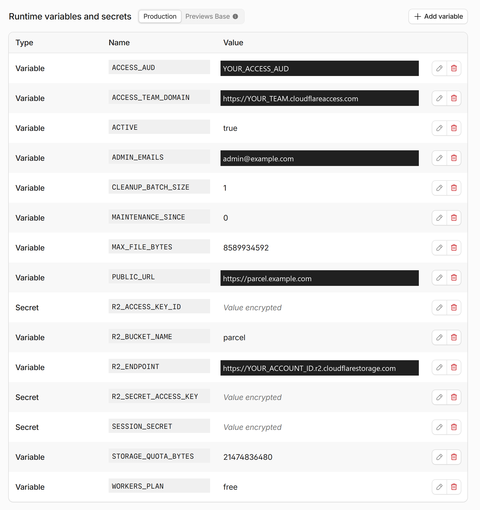
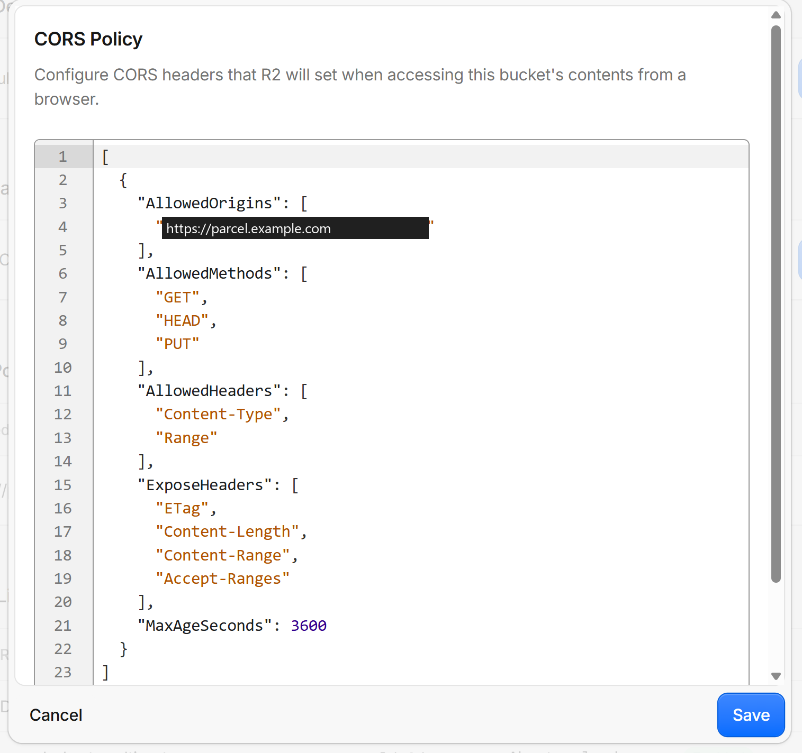
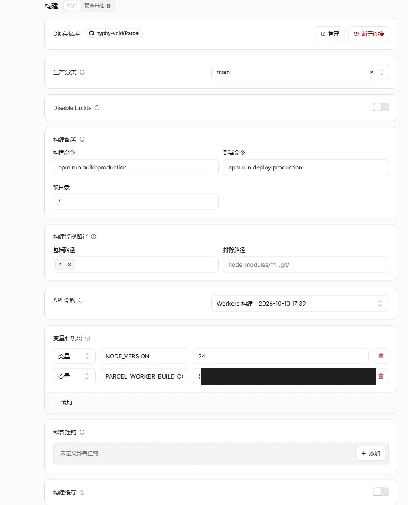

你的文件。
你的中转站。
把 Parcel 部署到自己的 Cloudflare
账户。
浏览器先加密，再把密文直传私有 R2。
MIT 开源 · 支持 Workers Free
文件怎样被保护
Cloudflare V3
在发送者浏览器加密、接收者浏览器解密。文件密钥留在两端。
AES-GCM 分块
16 MiB 原文 → HTTPS 传输密文
Parcel Worker + D1
验证权限、有效期与下载次数，签发短期密文访问地址。
不接收明文文件密钥与原始文件名。
每个文件使用独立的随机 256 位密钥。每个分块使用新的 12 字节随机
nonce 和 16 字节认证标签，额外占用 28
字节；认证同时绑定文件身份、块顺序与长度。
文件内容、原始文件名、媒体类型和原文 SHA-256
均被加密。服务端仍可见大小、分享
ID、有效期、下载次数和请求元信息。端到端加密仅适用于 Cloudflare
V3；独立 Go 与连接 Origin 的 Pages 构建保留原有传输协议。
链接密钥与分享密码
-
保留完整链接
分享链接的 # 后保存随机 32 字节密钥材料。URL 片段不会随 HTTP
请求发送；Parcel 也不会把它加入
API。缺少这部分，服务器无法解包文件密钥。
-
本机解包密钥
有密码时，浏览器用独立随机盐运行 Argon2id，再由 HKDF
结合链接密钥材料，用 AES-GCM
包裹文件密钥和元信息。接收者需要完整链接与密码。
-
单独验证下载权限
另一份使用不同盐的密码派生凭据，经 HTTPS 交给 Worker
做在线授权；它不是解包密钥。有效期、次数、撤销和管理员 TOTP
仍由服务端检查。
修改分享密码只重新包裹很小的密钥信封，不重传文件。已经拿到旧文件密钥和密文的人，仍能解密自己的副本；撤销无法收回已保存的文件或密钥。
此机制信任浏览器、设备与实际加载的网页代码。恶意更新的网页、扩展或本机恶意程序仍可能读取端点密钥。
HTTPS 和 Cloudflare 的存储加密继续提供额外保护，不能代替端点可信。
查看 R2 加密说明
·
核对实现代码
从空账户开始
按钮负责创建应用资源。管理员认证和文件跨域权限，按下面的实际控制台页面完成。
截图核对于
。
准备账户
准备 GitHub 与 Cloudflare 账户，先启用 R2 与 Workers
子域名。已有账户无需重复创建。选择 Access 认证时才需要建立
Zero Trust 组织；TOTP 模式不需要。R2
可能要求添加付款方式；请本人完成套餐和付款设置。
本教程适用于新实例。现有 Go、Pages 或 V3
实例升级，请使用仓库的迁移与生产部署文档，避免两套服务管理同一桶。
应用默认配额为 9 GB、单文件上限为 8 GiB。R2
免费额度按账户共享，存储、请求和其他桶都会影响账单；应用配额不是账单硬上限。查看 R2 价格。
创建应用
点击部署按钮，按 Cloudflare 的引导创建自己的 GitHub 仓库，选择
Worker 名称以及 D1、R2 资源。根目录保持
/，Node 版本使用
24。
构建命令为
npm run build，部署命令为
npm run deploy。部署脚本通过
DB 绑定执行 D1
migrations，并把实际创建的 R2 桶名写入
R2_BUCKET_NAME。
关闭“启用预览构建”。部署页面的“使用 Cloudflare Access
保护”保持关闭，让公开分享正常访问。接下来设置
ADMIN_AUTH=totp；如果选择 Access 方案，只保护管理员路径。
首次保持
ACTIVE=false。缺少运行时配置时返回
serverless_unconfigured
是预期状态；配置完成前不要对外分享。

Settings → Bindings → Production：DB 绑定 D1，FILES 绑定私有
R2；ADMIN_LIMITER 和 API_LIMITER
为速率限制器。图中的资源名为 parcel，命名空间值已覆盖并填入
YOUR_*_NAMESPACE_ID 示例标签；保留自己部署生成的绑定。

正式 parcel 实例的成功构建：Build settings 显示 npm run
build:production、npm run deploy:production 与根目录
/，下方各阶段均通过。这是既有实例的生产构建示例；新用户按钮部署应使用
npm run build 与 npm run deploy，不能照抄这里带 :production
的命令。
密码与动态码登录
推荐使用 Parcel 自带的管理员密码 + TOTP，不需要邮箱验证码。在
Worker 运行时设置
ADMIN_AUTH=totp。未设置时，程序仍默认使用下面的 Access
方案；仅更新代码不会自动切换。
保存恢复码
8 个恢复码单独保管 · 更换认证器后旧码失效
流程示意，没有可扫描的二维码、真实密钥或有效恢复码。
-
先完成下面的 R2、变量与三项长期密钥配置，保持
ACTIVE=false。当前部署脚本会自动应用包括
0003_admin_totp.sql 在内的 D1
migrations。
-
本机克隆仓库并使用 Node 24，执行
npm run admin:setup-token。命令将随机初始化密钥保存到
.parcel-v3/admin-setup-token.txt，不会打印密钥，也不会覆盖已有文件。将文件内容作为 Worker
Secret
ADMIN_SETUP_TOKEN
保存，去掉末尾换行；保留原
SESSION_SECRET。
-
打开自己的
/login，输入初始化密钥，设置至少
12 位的管理员密码。用支持 TOTP
的认证器扫描页面上的绑定码，或手动导入密钥；输入认证器显示的
6
位动态码完成绑定。二维码在浏览器本地生成，不使用第三方二维码服务。
-
安全保存页面给出的 8 个恢复码，再从 Worker Secrets 移除
ADMIN_SETUP_TOKEN。日常登录只需密码与动态码。管理页“登录安全”可以更换认证器；丢失认证器时，用密码
+ 一个恢复码重新绑定，每个恢复码只能使用一次。
现有实例从 Access 切换时，先在已有 Access
会话中完成绑定，再解除 Parcel
的七个管理路径拦截（见下方路径清单）。用新的无痕窗口验证密码 +
TOTP 登录与匿名 API 401 后，再开放实例。其他服务的 Access
配置无需修改。
Access（可选）
仅在使用
ADMIN_AUTH=access（或未设置认证模式）时执行本节。TOTP
模式跳过本节，不需要管理员邮箱和 Access JWT。
进入 Zero Trust → Access controls → Applications，添加
Self-hosted 应用。使用准备访问的 HTTPS 域名，可先用自己的
worker.账户.workers.dev 地址。
为同一个应用添加以下七个路径，避免保护整个域名：
/admin
/admin/*
/login
/api/v1/auth/*
/api/v1/admin/*
/api/v1/uploads
/api/v1/uploads/*
创建 Allow 策略，Include 选择 Emails 并填写管理员邮箱。启用
One-time PIN 或你自己的身份提供商。不要添加
Bypass，也不要把整个域名设为管理员应用；首页与
/s/* 分享页需要公开访问。

Access controls → Applications → parcel-admin → Edit →
Public
hostnames。图中七条路径属于同一个应用；真实域名已实色覆盖并替换为
example.com。为自己的应用配置相同路径，Allow
策略仅包含管理员邮箱。
复制应用的 AUD，记录组织 Team domain，如
https://your-team.cloudflareaccess.com。分别填入 Worker 的
ACCESS_AUD 和
ACCESS_TEAM_DOMAIN，ADMIN_EMAILS
与策略邮箱保持一致。多个管理员用逗号分隔。
创建 R2 凭据
R2 → Overview → Manage API Tokens → Create Account API
token。选择 Object Read & Write，仅允许这个应用的桶。记录
S3 Access Key ID 与 Secret Access Key，作为 Worker
的两项密钥保存。

Create Account API Token：选择 Object Read & Write，再选择
Apply to specific buckets only 并指定 parcel
桶。这里展示配置表单，没有生成或展示 Access Key ID、Secret
Access Key。
R2_ENDPOINT 是桶设置里的 S3 API
账户地址，例如
https://ACCOUNT_ID.r2.cloudflarestorage.com，不带桶名与尾部斜杠。Worker 的
FILES 绑定、R2_BUCKET_NAME
和凭据允许的桶必须一致。
桶保持私有，不启用公开 r2.dev
或公开桶域名。文件通过短期预签名地址上传与下载。
保存变量与密钥
Worker → Settings →
运行时变量和密钥。普通配置选择变量；以下三项勾选“密钥”：
-
SESSION_SECRET：独立生成的 64
位十六进制随机值。
-
R2_ACCESS_KEY_ID：刚创建的 S3
Access Key ID。
-
R2_SECRET_ACCESS_KEY：配套 S3
Secret Access Key。
生成会话密钥
node -e "console.log(require('node:crypto').randomBytes(32).toString('hex'))"
在自己的终端生成会话密钥，不要把结果放进
Git、Issue、截图或网页。单独安全备份；后续部署保持不变，直接更换会导致密码校验材料和
TOTP 密钥无法解密，影响分享解锁及管理员登录。

Add variable：选择 Production，填写 Key 和 Value，再勾选
Secret。截图输入框为空，仅显示占位文本；不要把真实密钥放进截图。
普通变量至少填写 PUBLIC_URL、ADMIN_AUTH=totp、R2_ENDPOINT、R2_BUCKET_NAME。PUBLIC_URL 必须等于实际访问的 HTTPS
origin，无路径、无尾部斜杠。只有 Access 模式才需要
ACCESS_TEAM_DOMAIN、ACCESS_AUD 和 ADMIN_EMAILS；TOTP
首次绑定另需临时 Secret ADMIN_SETUP_TOKEN。

Runtime variables and secrets →
Production。更新后的截图已设置
ADMIN_AUTH=totp，绑定完成后已移除 ADMIN_SETUP_TOKEN。原
Access 变量仅为历史保留，不参与 TOTP
认证。身份与账户值已覆盖为示例，密钥显示 Value
encrypted。图中实例 ACTIVE=true、配额
20 GiB；新部署先保持 ACTIVE=false，默认配额 9 GB。
允许浏览器直传
R2 → 你的桶 → Settings → CORS Policy → Edit。允许的 Origin
精确使用
PUBLIC_URL。下面的配置工具会生成可粘贴的 JSON。

Settings → CORS Policy → Edit。使用与 PUBLIC_URL
一致的来源。完整规则须包含 Content-Type、Range 和
X-Amz-Meta-Parcel-Upload；下面配置工具和无 JavaScript
示例都包含这三项。CORS
决定浏览器能发送哪些跨域请求，文件访问仍依赖私有桶与签名授权。
另在 Object lifecycle rules 添加一条仅针对
parcel/v3/ 前缀的未完成 Multipart
清理规则，1
天后终止未完成上传。不要设置已完成对象的独立删除期限，正常过期删除由应用
Cron 与 D1 状态协调。
确认 Cron 为 */5 * * * *，Free
模式保留 WORKERS_PLAN=free、CLEANUP_BATCH_SIZE=1。
使用加密分享
选择文件和可选分享密码。浏览器先读取原文件计算完整 SHA-256，
再逐块加密、上传；每块原文为 16
MiB，末块可更小，内存占用不会随文件总大小增长。
空文件也有一个带认证信息的 28 字节密文块。
暂停或刷新时保留网站数据。续传需重新选择原文件，Parcel
会核对完整 SHA-256，而非只信任文件名和大小。已完成块留在 R2，
重试使用新的随机
nonce；浏览器须保留本地上传密钥，任务也须仍在有效期内。
复制包含
#k=…
的完整分享链接，把可选密码分开发送，并留存链接。 分享页的“备份
/ 导入本机分享密钥”可以导出小型加密备份， 使用单独的至少 12
字节备份口令。换浏览器管理密码前先导入备份；
仅凭管理员登录不能找回丢失的密钥或原始文件名。
接收者先在本机解锁，再把通过认证的密文块接收到浏览器
IndexedDB。
接收完成后点“保存解密文件”，逐块校验、解密并流式写入磁盘，不会拼成巨型
Blob。刷新后可从完整缓存块继续；同一有效下载会话的重试不重复扣除下载资格。
本机需同时容纳临时密文与最终原文件，约两倍文件大小并预留余量。
浏览器配额、无痕模式、磁盘余量、下载权限和缓存自动清理都会影响大文件。
长期存储权限可选，不回答或拒绝不会阻止本次接收。
保存期间保持页面打开；确认文件已保存后，可清除本机续传缓存。
创建者浏览器的网站数据中保存本机密钥，不能防住控制该浏览器的人。
清理网站数据或换设备前先备份；本机密钥、完整链接和备份全部丢失后，服务器无法恢复。
旧版未加密 V3 分享不兼容，需重新上传；升级不会删除现有 D1 或
R2 数据。 Go 与连接 Origin 的 Pages 仍是独立的非 E2EE 模式。
生成你的配置
输入应用地址、账户 ID
与桶名。工具仅在当前浏览器计算，不接收任何密钥。
代码区可滚动查看；复制时会包含完整配置。
CORS Policy
R2 → Settings → CORS policy
运行时变量
Worker → 设置 → 变量和密钥
TOTP 模式还需保存三项长期密钥，以及仅用于首次绑定的
ADMIN_SETUP_TOKEN；Access 模式另填 Team domain、AUD
与管理员邮箱。
最后一次检查
配置完整后，把 ACTIVE 改为 true
并部署。用一个小文件验证整条链路，再开放实例。
-
无痕窗口打开
/admin：TOTP
模式应直接显示密码与动态码登录，错误密码或动态码均不能通过；匿名管理
API 应返回 401。Access 模式则应进入 Access
登录，未授权邮箱不能访问。
-
上传空文件、小文件与多分块文件，分别创建无密码和有密码分享；暂停、刷新、重选原文件续传。
确认 R2 保存密文，D1 不含原始文件名或明文文件密钥。
-
未登录窗口打开完整链接，测试正确密码、错误密码与缺少片段密钥；
暂停、刷新接收后继续，保存解密文件并与原文件比对 SHA-256。
首次请求丢响应、同一有效下载会话重试或续签均不重复扣次。
-
撤销分享后不能获得新的签名地址。已签地址最长还有 5 分钟有效期。
已经获得的密文和密钥副本无法收回。
-
导出、导入加密密钥备份；修改分享密码不应重新上传文件。
新接收者须使用新密码与完整链接才能解密。
-
等待 Cron，确认对象删除后释放配额。观察 Worker 错误与 CPU 指标。
Workers Free 的 CPU 预算为每次请求 10 ms。本地测试不能证明线上
CPU、Access 或真实 R2 配置；生产报 1102 时请检查指标。查看 Workers 限制。
遇到问题
页面返回 serverless_unconfigured
按所选模式检查变量与三项长期密钥。TOTP 需 ADMIN_AUTH=totp；Access
另需组织域名、AUD 与邮箱白名单。SESSION_SECRET 必须为 64
位十六进制；PUBLIC_URL 和 R2_ENDPOINT 必须是无路径、无尾部斜杠的
HTTPS 地址。
返回 host_denied 或登录循环
访问域名须等于 PUBLIC_URL。TOTP 模式若仍跳转邮箱验证，检查是否有
Access 应用覆盖这七个管理路径。Access 模式核对应用域名、AUD、Team
domain 与管理员邮箱。切换 Parcel 应用域名时同步更新 PUBLIC_URL 与
R2 CORS；教程站点迁移不需要修改应用域名。
上传被 CORS 拒绝或提示签名错误
检查 CORS Origin 与 PUBLIC_URL 完全一致；确认 FILES
绑定、R2_BUCKET_NAME、S3 凭据限定桶一致。账户 API Token 不能代替
S3 Secret Access Key。
哪些截图需要更新？
Parcel 应用侧的上传创建与进度、完整分享链接、密码修改与密钥备份、
接收者解锁、密文接收和解密保存流程截图都需要按新版重拍。
使用可丢弃的演示文件与密钥，不公开真实完整链接、密码、密钥备份或认证器密钥。
教程中的八张 Cloudflare 配置图仍适用：绑定、模板构建、可选
Access、R2 凭据、 变量、添加密钥、CORS 与生产构建。E2EE
不新增运行时密钥或 CORS 请求头；
两张构建图可按需刷新为新版本的发布证据。TOTP
绑定继续使用网页示意，无需真实扫码截图。
后续更新怎样保留配置？
模板部署使用 --keep-vars，保留控制台普通变量与密钥，并先执行 D1
migrations。不要把生产实例改成首次 CLI bootstrap。升级前备份 D1 与
SESSION_SECRET，阅读版本迁移说明；Worker 回滚不等于数据库回滚。

Settings → Builds → Production：正式实例使用 npm run
build:production 和 npm run deploy:production，根目录为 /，Node
为 24。YOUR_RESOURCE_CONFIG_JSON
标签覆盖了原始构建变量值，它是占位说明，不能直接粘贴：请按运维文档填写包含
accountId、workerName、databaseId、databaseName、bucketName
的完整 JSON 对象。新用户按钮流程仍使用 npm run build 与 npm run
deploy。
可以只使用 CLI 吗？
可以。安装 Node 24 与 Bash，克隆仓库，用 deploy/v3.example.json
建立忽略目录中的配置，准备限定账户权限的管理 Token，再运行 npm run
deploy:bootstrap -- --config
.parcel-v3/deploy.json。完整准备、冻结迁移与回滚步骤见仓库文档。